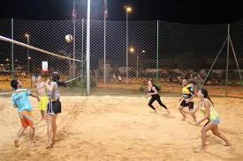

Meu nome é Bruno Alexandre Alves Cunha de Jesus, tenho 28 anos e sou natural de Brasília. Sou casado e pai de um
menino que acabou de completar seu primeiro aninho, minha maior motivação.
Atuei como empreendedor por alguns anos, sendo proprietário de um bar e de uma hamburgueria, que foi reconhecida
entre as 10 melhores de Brasília por três anos consecutivos. Em 2023, encerrei esse ciclo e iniciei uma nova
trajetória no setor imobiliário, atuando como host, acompanhando clientes em visitas a imóveis, onde permaneço
até hoje.
Busco, por meio deste curso, conquistar novas oportunidades para oferecer uma vida melhor à minha família, com
mais estabilidade e crescimento.
Hobbies
Nos meus dias livres gosto de fazer algumas coisas para passar o tempo, jogar video game, ver filmes e series,
passear com a familia,jogar volei e conhecer novos restaurantes e como um bom Flamenguista que sou de acompanhar
as noticias do meu time no
Ge Flamengo.
Se eu pudesse listar os meus favoritos poderia ser da seguinte forma:
Vôlei
Conhecer novos restaurantes
Passar um tempo de Qualidade com família e parentes

Uns dos meus hobbies favoritos.
Viagens
Todos temos sonhos de ir visitar outros paises, para saber sobre o lugar, culturas e culinária, dentre
vários países que eu tenho vontade de conhecer eu destaco esses 3 países.